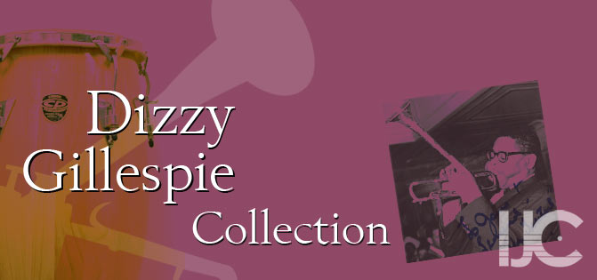

---
# IJC
---
<!DOCTYPE html>
<html xmlns="http://www.w3.org/1999/xhtml" xml:lang="en" lang="en">
<head>
<title>Dizzy Gillespie Discography - International Jazz Collections (IJC) - University of Idaho Library</title>
<meta http-equiv="Content-Type" content="text/html; charset=iso-8859-1" />
<meta http-equiv="Content-Language" content="en-us" />
<meta name="keywords" content="University of Idaho, International Jazz Collections, collection, IJC, memorabilia, jazz, photos, videos, movie, movies, Dizzy Gillespie" />
<meta name="description" content="Dizzy Gillepie Discography - University of Idaho International Jazz Collections" />
<meta name="copyright" content="2008 University of Idaho" />
<meta name="author" content="University of Idaho" />
<meta name="robot" content="all" />
<meta name="MSSmartTagsPreventParsing" content="true" />
<link rel="shortcut icon" href="../images/favicon.ico" />
<meta name="viewport" content="width=device-width, initial-scale=1.0">
<link href="/css/bootstrap.css" rel="stylesheet">
<link href="/css/uimods.css" rel="stylesheet" >
</head>
<body>
{% include headertocontent.html %}
  <!-- Page Content -->
  <div class="container breadholder" id="breadcrumbdiv">
    <ol class="breadcrumb">
      <li><a href="http://www.lib.uidaho.edu/index.html ">Home</a></li>
      <li><a href="/">International Jazz Collections</a></li>
      <li class="active">Dizzy Gillespie Collection</li>
    </ol>
  </div>
  <div class="container pagecontent" id="scrollnav"> <br / >
    
    <!-- Find Menu --> {% include menu.txt %} <!-- END Find Menu --> 
      
      <!-- left navigation -->
      
      <div id="audienceright1" class="greybkgd">
        <div class="mediacontainer"></div>
        <br />
        <div class="btn-group pull-right " style="margin-left:20px;">
          <button class="btn btn-small btn-default dropdown-toggle " data-toggle="dropdown"> Dizzy Gillespie Collection <span class="caret"></span> </button>
          <ul class="dropdown-menu">
            <li><a   id="home" href="/gillespie_dizzy/">Home</a></li>
            <li><a   id="Biography" href="/gillespie_dizzy/bio.html">Biography</a></li>
            <li><a   id="Recordings" href="/gillespie_dizzy/discography.html">Recordings</a></li>
            <li><a target="_blank"  id="FindingAid" href="http://nwda.orbiscascade.org/ark:/80444/xv21484">Finding Aid</a></li>
            <li><a   id="all" href="/gillespie_dizzy/all.html">View All Images</a></li>
            <li><a   id="Collection" href="http://digital.lib.uidaho.edu/cdm/landingpage/collection/ijcdg">Visit the Collection</a></li>
          </ul>
        </div>
        <h1>Recordings</h1>
        <!-- BEGINNING OF INSERTED CONTENT -->
        <h2>Partial Discography<sup><a class="stronglink" href="#footnote1">1</a></sup></h2>
        <ul>
          <li>1950: <em>Modern Trumpets</em> (Dial)</li>
          <li>1950: <em>Dizzy Gillespie Plays/Johnny Richards Conducts</em> 10-inch album (Discovery)</li>
          <li>1952: <em>Dizzy Gillespie aka School Days</em> (Dee Gee)</li>
          <li>1952: <em>Dizzy Gillespie Volume 1</em> 10-inch album (Atlantic)</li>
          <li>1952: <em>Dizzy Gillespie Volume 2</em> 10-inch album (Atlantic)</li>
          <li>1953: <em>Pleyel Concert</em> (Vogue)</li>
          <li>1953: <em>Horn Of Plenty</em> 10-inch album (Blue Note)</li>
          <li>1953: <em>Dizzy Gillespie With Charlie Christian</em> 10-inch album (Esoteric)</li>
          <li>1953: <em>Dizzy Gillespie With Strings</em> (Clef)</li>
          <li>1953: <em>Dizzy In Paris</em> 10-inch album (Contemporary)</li>
          <li>1953: <em>Dizzy Over Paris aka Concert In Paris</em> (Roost)</li>
          <li>1954: <em>Dizzy Gillespie Orchestra</em> 10-inch album (Allegro)</li>
          <li>1954: <em>Dizzy Gillespie And His Original Big Band</em> 10-inch album (Gene Norman)</li>
          <li>1954: <em>Dizzier And Dizzier</em> (RCA Victor)</li>
          <li>1954: <em>The Dizzy Gillespie-Stan Getz Sextet #1</em> 10-inch album (Norgran)</li>
          <li>1954: <em>The Dizzy Gillespie-Stan Getz Sextet #2</em> 10-inch album (Norgran)</li>
          <li>1954: <em>Afro</em> (Norgran)</li>
          <li>1954: <em>Dizzy Gillespie Plays</em> 10-inch album (Allegro)</li>
          <li>1955: <em>Dizzy And Strings aka Diz Big Band</em> (Norgran)</li>
          <li>1955: with Stan Getz <em>Diz And Getz</em> (Verve)</li>
          <li>1955: with Roy Eldridge <em>Roy And Diz</em> (Clef)</li>
          <li>1955: with Eldridge <em>Roy And Diz, Volume 2</em> (Clef)</li>
          <li>1955: <em>Dizzy Gillespie</em> (Allegro)</li>
          <li>1955: <em>Groovin&#8217; High</em> (Savoy Jazz)</li>
          <li>1955: with Jimmy McPartland <em>Hot Vs. Cool</em> (MGM)</li>
          <li>1956: <em>Dizzy Gillespie And His Orchestra aka Jazz Recital</em> (Norgran)</li>
          <li>1956: <em>Dizzy Gillespie</em> (American Recording Society)</li>
          <li>1956: <em>Big Band Jazz</em> (American Recording Society)</li>
          <li>1956: with Eldridge <em>Trumpet Battle</em> (Clef)</li>
          <li>1956: with Eldridge <em>The Trumpet Kings</em> (Clef)</li>
          <li>1956: <em>The Champ</em> (Savoy Jazz)</li>
          <li>1956: <em>The New Continent</em> (Limelight)</li>
          <li>1956: <em>For Musicians Only</em> (Verve)</li>
          <li>1956: <em>World Statesman</em> (Norgran)</li>
          <li>1957: <em>Dizzy At Home And Abroad</em> (Atlantic)</li>
          <li>1957: <em>The Dizzy Gillespie Story</em> (Savoy Jazz)</li>
          <li>1957: <em>Dizzy In Greece</em> (Verve)</li>
          <li>1958: <em>Manteca</em> (Verve)</li>
          <li>1958: <em>Dizzy Gillespie And Stuff Smith</em> (Verve)</li>
          <li>1958: with Slim Gaillard <em>Gaillard And Gillespie</em> (Ultraphonic)</li>
          <li>1958: with Harry &#8216;Sweets&#8217; Edison, Eldridge <em>Tour De Force</em> (Verve)</li>
          <li>1958: <em>Birk&#8217;s Works</em> (Verve)</li>
          <li>1958: <em>At Newport</em> (Verve)</li>
          <li>1958: <em>Dizzy Gillespie And Count Basie At Newport</em> (Verve)</li>
          <li>1958: with Sonny Rollins, Sonny Stitt <em>Duets aka Dizz, Rollings &amp; Stitt</em> (Verve)</li>
          <li>1959: with Charlie Parker <em>Diz &#8216;N&#8217; Bird In Concert</em> (Roost)</li>
          <li>1959: <em>The Ebullient Mr. Gillespie</em> (Verve)</li>
          <li>1959: <em>Have Trumpet, Will Excite!</em> (Verve)</li>
          <li>1959: <em>The Greatest Trumpet Of Them All</em> (Verve)</li>
          <li>1960: <em>A Portrait Of Duke Ellington</em> (Verve)</li>
          <li>1960: <em>Gillespiana: The Carnegie Hall Concert</em> (Verve)</li>
          <li>1961: with Count Basie <em>First Time! The Count Meets The Duke</em> (Columbia)</li>
          <li>1961: <em>An Electrifying Evening With The Dizzy Gillespie Quintet</em> (Verve)</li>
          <li>1961: <em>Perceptions</em> (Verve)</li>
          <li>1961: <em>Jazz Recital</em> (Verve)</li>
          <li>1962: with Miles Davis, Fats Navarro <em>Trumpet Giants</em> (New Jazz)</li>
          <li>1962: <em>Jazz On The French Riviera</em> (Philips)</li>
          <li>1963: <em>Dateline Europe</em> (Reprise)</li>
          <li>1963: <em>New Wave!</em> (Philips)</li>
          <li>1963: <em>Something Old, Something New</em> (Philips)</li>
          <li>1964: <em>Dizzy Goes Hollywood</em> (Philips)</li>
          <li>1964: <em>Dizzy Gillespie And The Double Six Of Paris</em> (Philips)</li>
          <li>1964: <em>The Cool World</em> film soundtrack (Philips)</li>
          <li>1964: <em>Jambo Caribe</em> (Limelight)</li>
          <li>1965: <em>The New Continent</em> (Limelight)</li>
          <li>1964: <em>The Essential Dizzy Gillespie</em> (Verve)</li>
          <li>1965: <em>Angel City</em> (Moon)</li>
          <li>1965: <em>Gil Fuller And The Monterey Jazz Festival Orchestra With Dizzy Gillespie</em> (Pacific Jazz)</li>
          <li>1966: with Eldridge <em>Soul Mates</em> (Verve)</li>
          <li>1966: <em>A Night In Tunisia</em> (Verve)</li>
          <li>1967: <em>Swing Low, Sweet Cadillac</em> (Impulse!)</li>
          <li>1968: <em>Reunion Big Band</em> (MPS)</li>
          <li>1969: <em>Live At The Village Vanguard</em> (Solid State)</li>
          <li>1969: <em>My Way</em> (Solid State)</li>
          <li>1969: <em>Cornacopia</em> (Solid State)</li>
          <li>1970: <em>The Real Thing</em> (Perception)</li>
          <li>1970: <em>Giants</em> (Perception)</li>
          <li>1970: <em>Portrait Of Jenny</em> (Perception)</li>
          <li>1971: <em>Dizzy Gillespie And The Dwike Mitchell-Willie Ruff Duo</em> (Mainstreem)</li>
          <li>1973: <em>Giants of Jazz</em> (Atlantic)</li>
          <li>1973: <em>The Giant</em> (Accord)</li>
          <li>1974: <em>Dizzy Gillespie&#8217;s Big Four</em> (Pablo)</li>
          <li>1975: with Machito <em>Afro-Cuban Jazz Moods</em> (Pablo)</li>
          <li>1975: with Eldridge <em>Jazz Maturity&hellip; Where It&#8217;s Coming From</em> (Pablo)</li>
          <li>1975: with Eldridge <em>The Trumpet Kings At Montreux &#8217;75</em> (Pablo)</li>
          <li>1976: <em>Dizzy&#8217;s Party</em> (Pablo)</li>
          <li>1977: <em>Free Ride</em> (Pablo)</li>
          <li>1977: with Count Basie <em>The Gifted Ones</em> (Pablo)</li>
          <li>1977: <em>Montreux &#8217;77</em> (Pablo)</li>
          <li>1980: <em>Trumpet Summit Meets Oscar Peterson Big Four</em> (Pablo)</li>
          <li>1980: with Mongo Santamaria, Toots Thielemans <em>Summertime</em> (Pablo)</li>
          <li>1981: <em>Musician-Composer-Raconteur</em> (Pablo)</li>
          <li>1982: with Arturo Sandoval <em>To A Finland Station</em> (Pablo)</li>
          <li>1984: <em>New Faces</em> (GRP)</li>
          <li>1985: <em>Arturo Sandoval And His Group With Dizzy Gillespie</em> (Egrem)</li>
          <li>1985: <em>Closer To The Source</em> (Atlantic)</li>
          <li>1987: <em>Dizzy Gillespie Meets Phil Woods Quintet</em> (Timeless)</li>
          <li>1990: <em>Live At The Royal Festival Hall</em> (Enja)</li>
          <li>1990: <em>Symphony Sessions</em> (Pro Arte)</li>
          <li>1990: with Max Roach <em>Max &amp; Dizzy - Paris 1989</em> (A&amp;M)</li>
          <li>1990: <em>The Winter In Lisbon</em> film soundtrack (Milan)</li>
          <li>1992: <em>To Diz With Love: Diamond Jubilee Recordings</em> (Telarc)</li>
          <li>1992: <em>To Bird With Love: Live At The Blue Note</em> (Telarc)</li>
          <li>1997: <em>Bird Songs: the Final recordings</em> 1991 recording (Telarc)</li>
          <li>1998: the Dizzy Gillespie Alumni All-Stars <em>Dizzy&#8217;s 80th &#8220;Birthday Party!&#8221;</em> (Shanachie)</li>
          <li>1998: <em>On The Sunny Side Of The Street</em> 1953 recording (Moon)</li>
          <li>1998: <em>Angel City</em> 1965 recording (Moon)</li>
          <li>1998: <em>Tour De Force</em> 1969 recording (Moon)</li>
          <li>1998: with Sonny Stitt <em>Diz Meets Stitt</em> 1974 recording (Moon)</li>
          <li>1998: <em>Dizzy In South America Vol. 1</em> 1956 recordings (Red Anchor)</li>
          <li>2000: <em>Dizzy In South America Vol. 2</em> 1956 recordings (Consolidated Artists)</li>
        </ul>
        <h2>Partial Videography<sup><a class="stronglink" href="#footnote1">1</a></sup></h2>
        <ul>
          <li>1995: <em>A Night In Chicago</em> (View Video)</li>
          <li>2000: <em>Ralph J. Gleason&#8217;s Jazz Casual: Dizzy Gillespie</em> (Rhino) </li>
        </ul>
        <h2>References</h2>
        <ol>
          <li><a name="footnote1"></a><em>The Encyclopedia of Popular Music</em> pp. 2150</li>
        </ol>
        <br />
        <br />
        <br />
        <br />
        <br />
        <br />
        <br />
        <br />
        <br />
        <!-- END OF INSERTED CONTENT --> 
        
      </div>
    </div>
  </div>
  
  <!-- Marketing Div --> 
  {% include marketing.txt %} 
  <!-- END Marketing--> 
  
</div>
<!-- Help Div --> 
{% include helpcontainer.html %} 
<!-- END Help Div --> <!-- Footer Div --> {% include footer.txt %} <!-- /footer --> 

<!-- Example row of columns --> 

<!-- /footer --> 
<script src="https://code.jquery.com/jquery-latest.min.js"
        type="text/javascript"></script> 
<script src="/js/bootstrap.js"></script><script src="/js/scrolltotop.js"></script> 
<script src="/js/affix.js"></script> 
<script src="/js/datatables.js"></script> 
<script>    $(document).ready(function() {$("ul.nav-justified li:nth-child(3)").addClass('active');$("div#leftnavmenu a#dizzy").last().addClass('active-find'); $("div#small_menu a#dizzy").last().addClass('active');$("small#dizzylist ").show();$("ul.dizzy a#Recordings").addClass('active');});</script> 
<script src="/js/eventstracker.js"></script> 
<!-- Google Analytics --> 
<script type="text/javascript">
var gaJsHost = (("https:" == document.location.protocol) ? "https://ssl." : "http://www.");
document.write(unescape("%3Cscript src='" + gaJsHost + "google-analytics.com/ga.js' type='text/javascript'%3E%3C/script%3E"));
</script> 
<script type="text/javascript">
var pageTracker = _gat._getTracker("UA-4564291-1");
pageTracker._initData();
pageTracker._trackPageview();
</script> 
<!-- End Google Analytics --> 
<!-- Final Javascript Div --> {% include final.js %} <!-- END Final Javascript-->
</body>
</html>